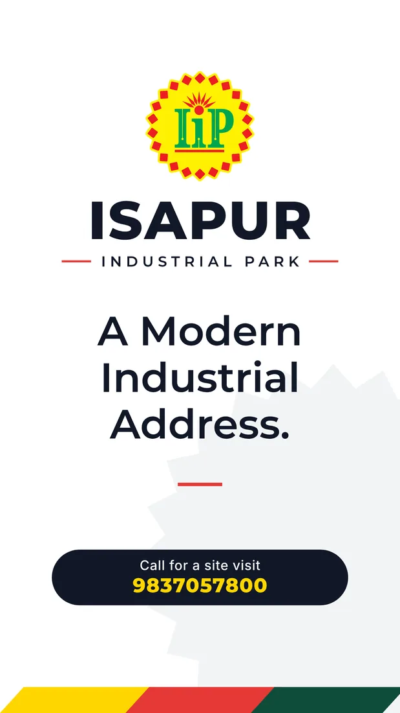

| Brand story, mission and positioning | Everything else (voice, imagery, claims) is judged against it. Guides open with it. | Why the park exists, who it is for (local factory owners, SME manufacturers), what it promises, one-line positioning | NEW | source source source |
| Logo system | The most copied and most misused asset. | Primary lockup, horizontal and stacked, badge-only, wordmark, mono and reversed | HAVE | source source source |
| Logo do and do not | Minimum set of any guide: stops stretching, recolouring, effects. | Wrong colours, stretch, outline, shadow, low-contrast backgrounds | HAVE | source source source |
| Colour system | Recognition from afar; printers need exact codes. | Primary, secondary, neutral, HEX, RGB | PARTIAL | source source source |
| Typography | Keeps every page and post looking like one brand. | Headline and body fonts, weights, type scale, fallback fonts, licence | HAVE | source source source |
| Voice and tone | Most skipped section, most needed once several people post. | Personality, words we use and avoid, tone by situation, example captions, English only rule | NEW | source source source |
| Photography and imagery | Sets the look of every photo; stock and AI treatment rules. | Subjects, light, framing, real vs AI imagery, do and do not | PARTIAL | source source source |
| Iconography and illustration | Fast scanning on boards and posts. | Line style, stroke, grid, full set, usage | HAVE | source source |
| Graphic elements and patterns | Brand device that works when the logo is small. | Sunburst, tri-colour stripe, accent line, diagonal panels, pattern | HAVE | source source |
| Layout and grid | Lets non designers build on brand pages. | Margins, grid, hierarchy, max words per board, safe areas | PARTIAL | source source |
| Applications | Shows rules in real use. | Pole board, hoarding, gate, stationery, ID | HAVE | source source source |
| Signage and site hoarding specs | Park specific: sizes, materials, illumination. | Sizes, materials, viewing distance, entry totem, directory board | PARTIAL | source source source |
| Social media guidelines | Next phase. Platform consistency. | Profile image, cover sizes, post templates, hashtags, emoji | NEW | source source source |
| Digital and web presence | Google profile, website, WhatsApp need the same identity. | Favicon, Google Business profile, WhatsApp profile, email signature, link in bio | NEW | source source |
| Motion | Rare but growing; for reels and status videos. | Timing, easing, logo reveal, transitions | NEW | source |
| File formats and asset library | People must find the right file. | SVG, PDF, PNG, WEBP, source files | PARTIAL | source source |
| Governance and updates | Prevents drift after handover. | Owner, approval, change log, contact, who may use the logo (brokers | NEW | source source source |


Social media guidelines
NewStarter kit for the next phase. One profile picture everywhere, the same colours and lines, one clear call to action: call or visit.

Sizes by platform (typical, re-check before upload)
Content pillars DRAFT
Caption formula DRAFT
1 fact, 1 proof, 1 action. Example: 50 ft wide RCC roads laid across the park. See them yourself, visit this week. Call 9837057800.
Hashtags DRAFT
#IsapurIndustrialPark #IIP #IndustrialPlots #ModinagarIndustrial #HapurModinagarRoad
Rules
Handles, website and email are UNKNOWN today. Send them and they are added to the knowledge file and this page.